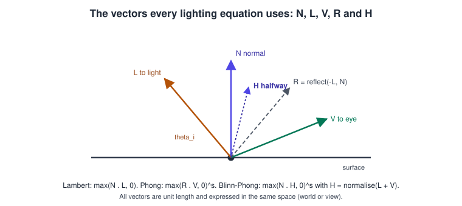
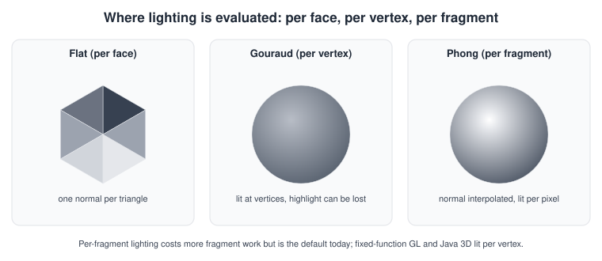
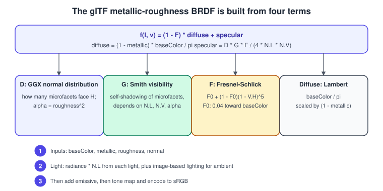
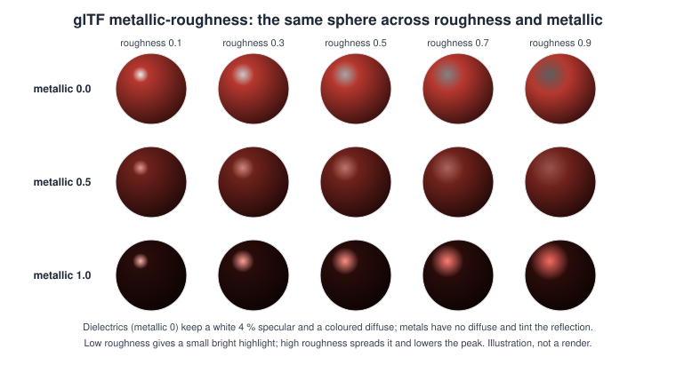

Lighting & Shading Models
|
This content was generated with the assistance of AI and should be verified against the official documentation before being relied on in production. |
A lighting model is the formula that turns a surface point, a light and a viewer into a colour. It is the part of rendering that makes the shelf look like wood and
the book cover like paper: where the bright spots appear, how dark the shadowed side gets and what happens at a grazing angle. Two generations coexist today. The classic
empirical models (Lambert, Phong, Blinn-Phong) are a few lines of shader code, cheap and easy to tweak, and still the right choice for stylised or low-end content. The physically based
models (PBR) describe a material with measurable parameters, behave consistently under any light, and are the standard of glTF 2.0, Unity’s Lit shaders, Unreal Engine’s default materials and
three.js’s MeshStandardMaterial.
Facts were checked in November 2026 against glTF 2.0 (Appendix B, the metallic-roughness BRDF, also standardised as ISO/IEC 12113:2022) and its KHR_materials_* and KHR_lights_punctual extensions,
OpenGL 4.6 and GLSL 4.60, WGSL (W3C Candidate Recommendation Draft of 15 September 2026), Metal Shading Language 4, Unity 6 (URP and HDRP) and three.js current releases. Shading code runs on any GPU that supports programmable
shaders. This page assumes the vectors and spaces of vectors and matrices and the normals and tangents of
meshes and vertex data. Shadows and global illumination continue in their own page, and the linear-light workflow that
lighting maths requires is described in colour spaces, HDR and tone mapping. In the Bookshelf example the shelf is first lit with Blinn-Phong by a desk lamp, then with the
glTF PBR model.
The vectors every model uses
All terms below are built from five unit vectors at the shaded point, all in the same space (world space, or view space, but never mixed).

-
N, the surface normal (from the mesh, interpolated and re-normalised, optionally perturbed by a normal map).
-
L, from the point toward the light. For a directional light it is constant; for a point or spot light it is the normalised difference of positions.
-
V, from the point toward the eye.
-
R, the mirror reflection of the light direction: \(\mathbf{R} = 2(\mathbf{N}\cdot\mathbf{L})\mathbf{N} - \mathbf{L}\) (the GLSL
reflectfunction takes the opposite direction, so callreflect(-L, N)). -
H, the half vector between light and view: \(\mathbf{H} = \operatorname{normalise}(\mathbf{L} + \mathbf{V})\).
Dot products of these vectors are clamped to zero when negative (a light behind the surface contributes nothing), which the code writes as max(dot(N, L), 0.0) or saturate(dot(N, L)).
Light types and units
| Light | Defined by | Attenuation and notes |
|---|---|---|
Directional |
a direction and an intensity |
Parallel rays, no falloff: the sun or a moon. Cheapest. glTF intensity in lux. |
Point |
a position and an intensity |
Inverse-square falloff, \(1/d^2\). glTF intensity in candela (lumens per steradian). An artificial range cut-off keeps the light local. |
Spot |
position, direction, inner and outer cone angles |
A point light multiplied by a smooth cone factor between the two angles. |
Area (rectangle, disc, tube) |
a shape and an emission |
Needs linearly transformed cosines or ray tracing; not part of glTF’s punctual lights. Unity HDRP and Unreal support them. |
Ambient / environment |
a constant, a hemisphere or an environment map |
Stands for light from everywhere else; image-based lighting (below) replaces the old constant ambient term. |
The classic fixed-function equation attenuated a point light by \(1 / (k_c + k_l d + k_q d^2)\) with constant, linear and quadratic coefficients chosen by hand. Physical lights use the inverse-square law and, for performance,
multiply by a smooth window that forces the contribution to zero at a chosen range: \(\operatorname{clamp}\left(1 - (d/r)^4,\ 0,\ 1\right)^2 / d^2\), the form used by glTF’s KHR_lights_punctual implementation notes and by most engines.
Lambert, Phong and Blinn-Phong
Lambert diffuse
A matte surface scatters light equally in all directions, so its brightness depends only on the angle between the normal and the light. For an albedo (diffuse colour) \(\rho\) and light colour \(\mathbf{c}_l\):
\[\mathbf{c}_{\text{diffuse}} = \frac{\rho}{\pi}\,\mathbf{c}_l\,\max(\mathbf{N}\cdot\mathbf{L},\,0)\]
The \(1/\pi\) factor is what makes the model energy conserving; many older shaders drop it and compensate by multiplying the light’s intensity by \(\pi\). A light intensity convention that is not stated is the most common reason an imported model looks too dark or too bright.
Phong and Blinn-Phong specular
Phong adds a bright highlight where the reflected light points at the eye: \(\max(\mathbf{R}\cdot\mathbf{V},\,0)^{s}\), where the shininess exponent \(s\) makes the highlight small and sharp as it grows. Blinn-Phong replaces \(\mathbf{R}\cdot\mathbf{V}\) with \(\mathbf{N}\cdot\mathbf{H}\), which is cheaper (no reflect) and behaves better at grazing angles, where \(\mathbf{R}\cdot\mathbf{V}\) becomes negative and cuts the highlight short:
\[\mathbf{c}_{\text{spec}} = k_s\,\mathbf{c}_l\,\max(\mathbf{N}\cdot\mathbf{H},\,0)^{s}\]
For the same visual width a Blinn-Phong exponent is roughly four times the Phong exponent. The total colour is ambient plus diffuse plus specular, summed over lights:
\[\mathbf{c} = k_a\,\mathbf{c}_{\text{ambient}} + \sum_{i}\left(\frac{\rho}{\pi}\,\max(\mathbf{N}\cdot\mathbf{L}_i,0) + k_s\,\max(\mathbf{N}\cdot\mathbf{H}_i,0)^{s}\right)\mathbf{c}_{l,i}\]
Common mistakes: forgetting the max (negative contributions subtract light), adding specular where \(\mathbf{N}\cdot\mathbf{L}\) is zero or negative (a highlight on the unlit side), un-normalised interpolated normals and
vectors, and mixing spaces. The empirical models are not energy conserving (a sharper highlight is not dimmer in total), cannot represent Fresnel reflection (surfaces become mirror-like at grazing angles), and metals cannot
be described without tinting the specular by hand.
Shading frequency: flat, Gouraud and per-fragment
Where the equation is evaluated is independent of which equation it is.

-
Flat shading: one normal per triangle; each facet has a single colour. Good for a low-poly look.
-
Gouraud shading: light is computed at the vertices and the colours are interpolated across the triangle. This is what fixed-function OpenGL and Java 3D did. A highlight that falls inside a triangle between lit vertices is lost.
-
Phong shading (per-fragment lighting): the normal is interpolated across the triangle and re-normalised, and the model is evaluated for every pixel. It is the default for all modern shaders, because pixel work is cheap and it is the only way to use normal maps. Do not confuse Phong shading (interpolating normals) with the Phong reflection model (the specular term above).
Normal mapping
A normal map stores a perturbed normal per texel to fake fine surface detail (book embossing, wood grain) without adding triangles. The texture holds normals in tangent space, relative to the surface, so the same map works on a rotated or deformed mesh. In the shader, decode and rotate by the tangent frame (T, B, N from the vertex data; see the tangent-frame figure on the meshes page):
\[\mathbf{n}_{\text{tangent}} = 2\,\mathbf{t} - 1, \qquad \mathbf{N}' = \operatorname{normalise}\big(\mathrm{TBN}\,\mathbf{n}_{\text{tangent}}\big)\]
// vNormal, vTangent (xyz) and the sign vTangentW come from the vertex shader, already in world space.
vec3 perturbNormal(sampler2D normalMap, vec2 uv, vec3 N, vec3 T, float tangentW) {
vec3 B = cross(N, T) * tangentW; // bitangent from the tangent's sign
mat3 TBN = mat3(normalize(T), normalize(B), normalize(N));
vec3 n = texture(normalMap, uv).xyz * 2.0 - 1.0; // normal maps are LINEAR textures
return normalize(TBN * n);
}Details that cause visible errors: normal maps must be sampled from a linear (non-sRGB) texture; the green channel points up (OpenGL and glTF convention, "Y+") in glTF, Unity and Blender but down in DirectX-style maps used by some tools and by Unreal Engine’s default import, so one of the two needs flipping; tangents must be generated the same way as the baker (MikkTSpace); and with non-uniform scale the normal must be transformed by the inverse transpose of the model matrix. Derivative-based tangent frames (computing T and B from screen-space derivatives of the UVs) avoid storing tangents but cost more per pixel and can differ from the baked result.
Physically based shading: glTF metallic-roughness
PBR describes a surface by a few material parameters and a microfacet reflectance function (a BRDF) that is energy conserving and reciprocal. The glTF 2.0 core material has exactly five inputs:
-
baseColor (RGBA, sRGB texture times a linear factor): the diffuse colour of non-metals, the reflectance colour (F0) of metals.
-
metallic: 0 for dielectrics (wood, paper, plastic), 1 for metals; intermediate values are only for transitions such as rust or dirt.
-
roughness: 0 mirror-smooth to 1 fully rough. The shader uses \(\alpha = \text{roughness}^2\).
-
normal map (tangent space) and optional occlusion (ambient only) and emissive textures.
Metalness and roughness are packed by glTF into one texture: roughness in the green channel, metalness in the blue channel, linear (not sRGB), so the same texture can also hold ambient occlusion in red.

Appendix B of the glTF specification defines the BRDF for a punctual light, with \(\alpha = \text{roughness}^2\), \(c_{\text{diff}} = \operatorname{lerp}(\text{baseColor},\,0,\,\text{metallic})\) and \(F_0 = \operatorname{lerp}(0.04,\,\text{baseColor},\,\text{metallic})\):
\[f(\mathbf{l},\mathbf{v}) = (1 - F)\,\frac{c_{\text{diff}}}{\pi} + F\,D\,V\]
with the three specular terms
\[F = F_0 + (1 - F_0)\,(1 - \lvert\mathbf{V}\cdot\mathbf{H}\rvert)^5\]
\[D = \frac{\alpha^2 }{\pi \left( (\mathbf{N}\cdot\mathbf{H})^2 \, (\alpha^2 - 1) + 1 \right)^2 }\]
\[V = \frac{0.5}{\mathbf{N}\cdot\mathbf{L}\sqrt{(\mathbf{N}\cdot\mathbf{V})^2 \, (1-\alpha^2) + \alpha^2 } + \mathbf{N}\cdot\mathbf{V}\sqrt{(\mathbf{N}\cdot\mathbf{L})^2 \, (1-\alpha^2) + \alpha^2 } }\]
and the outgoing radiance of one light is \(f(\mathbf{l},\mathbf{v})\,\mathbf{c}_l\,\max(\mathbf{N}\cdot\mathbf{L},0)\).
-
\(F\) is the Fresnel term (Schlick approximation): every surface becomes mirror-like at grazing angles, and the base reflectance at normal incidence is about 4 percent for dielectrics (\(F_0 = 0.04\)) and the colour of the metal for metals.
-
\(D\) is the normal distribution function (GGX or Trowbridge-Reitz): the density of microfacets whose normal equals \(\mathbf{H}\). Higher roughness spreads and lowers the highlight.
-
\(V\) is the visibility term (height-correlated Smith GGX), which already contains the \(1/(4\,\mathbf{N}\cdot\mathbf{L}\,\mathbf{N}\cdot\mathbf{V})\) denominator and models the microfacets shadowing and masking each other.
-
The diffuse term is Lambert, attenuated by \((1-F)\) so total reflected energy never exceeds the incoming light, and zero for metals.

The grid shows how the parameters behave: along the roughness axis the highlight widens and dims; along the metallic axis the diffuse colour vanishes and the highlight takes the base colour. Because the parameters are physical, a material authored in one tool or engine looks similar under any light, which is why glTF assets can be exchanged between viewers.
Image-based lighting
Real scenes are lit from every direction, not just from lamps. Image-based lighting (IBL) replaces the constant ambient term with an environment map (a cube map or equirectangular HDR image) that is pre-integrated for the BRDF:
-
a low-resolution irradiance map (or nine spherical-harmonics coefficients) for the diffuse part, looked up by the normal;
-
a pre-filtered radiance cube map whose mip levels are blurred by increasing roughness, looked up by the reflection vector and the roughness (the same mip chain mechanism described on the textures page);
-
a small 2D BRDF lookup table indexed by \(\mathbf{N}\cdot\mathbf{V}\) and roughness that supplies the Fresnel scale and bias (the "split-sum" approximation).
Ambient occlusion from the occlusion texture and, for dynamic scenes, screen-space or ray-traced occlusion dim the ambient term; see the shadows and global illumination page. The Khronos glTF Sample Renderer and glTF-IBL-Sampler show a complete, readable implementation.
Material extensions
glTF keeps the core small and adds optional features through extensions: KHR_materials_emissive_strength (HDR emission), KHR_materials_ior, KHR_materials_specular, KHR_materials_clearcoat (a varnish layer, useful for the book’s cover),
KHR_materials_sheen (cloth), KHR_materials_transmission and KHR_materials_volume (glass, liquids), KHR_materials_iridescence, KHR_materials_anisotropy, and KHR_materials_unlit (skips lighting entirely).
KHR_lights_punctual defines directional, point and spot lights in the file.
Complete examples
Blinn-Phong in GLSL (desk lamp on the Bookshelf)
#version 450 core
in vec3 vWorldPos;
in vec3 vNormal;
in vec2 vUv;
layout(binding = 0) uniform sampler2D uBaseColor; // sRGB texture: sampled as linear
uniform vec3 uCameraPos;
uniform vec3 uLightPos; // the desk lamp, world space
uniform vec3 uLightColor; // linear RGB
uniform float uShininess; // Blinn-Phong exponent, for example 64.0
uniform vec3 uSpecular; // k_s, for example vec3(0.25)
out vec4 fragColor; // render to an sRGB framebuffer so the output is encoded for display
void main() {
vec3 albedo = texture(uBaseColor, vUv).rgb;
vec3 N = normalize(vNormal); // interpolation shortens the normal
vec3 toLight = uLightPos - vWorldPos;
float dist2 = dot(toLight, toLight);
vec3 L = toLight * inversesqrt(dist2);
vec3 V = normalize(uCameraPos - vWorldPos);
vec3 H = normalize(L + V);
float nDotL = max(dot(N, L), 0.0);
float spec = nDotL > 0.0 ? pow(max(dot(N, H), 0.0), uShininess) : 0.0;
float attenuation = 1.0 / max(dist2, 0.0001); // inverse square
vec3 ambient = 0.03 * albedo;
vec3 color = ambient + (albedo / 3.14159265 * nDotL + uSpecular * spec) * uLightColor * attenuation;
fragColor = vec4(color, 1.0);
}glTF PBR in GLSL (one directional light)
#version 450 core
const float PI = 3.14159265359;
in vec3 vWorldPos;
in vec3 vNormal;
in vec2 vUv;
layout(binding = 0) uniform sampler2D uBaseColorTex; // sRGB
layout(binding = 1) uniform sampler2D uMetalRoughTex; // linear: G = roughness, B = metalness
uniform vec3 uCameraPos;
uniform vec3 uLightDir; // unit vector from the surface toward the light
uniform vec3 uLightColor; // linear radiance (colour times illuminance)
out vec4 fragColor;
vec3 fresnelSchlick(vec3 f0, float vDotH) {
return f0 + (1.0 - f0) * pow(1.0 - vDotH, 5.0);
}
float distributionGGX(float nDotH, float a2) {
float d = nDotH * nDotH * (a2 - 1.0) + 1.0;
return a2 / (PI * d * d);
}
float visibilitySmithGGXCorrelated(float nDotL, float nDotV, float a2) {
float gv = nDotL * sqrt(nDotV * nDotV * (1.0 - a2) + a2);
float gl = nDotV * sqrt(nDotL * nDotL * (1.0 - a2) + a2);
return 0.5 / max(gv + gl, 1e-5);
}
void main() {
vec4 base = texture(uBaseColorTex, vUv);
vec2 mr = texture(uMetalRoughTex, vUv).gb;
float roughness = mr.x;
float metallic = mr.y;
vec3 N = normalize(vNormal);
vec3 V = normalize(uCameraPos - vWorldPos);
vec3 L = normalize(uLightDir);
vec3 H = normalize(L + V);
float nDotL = max(dot(N, L), 0.0);
float nDotV = max(dot(N, V), 1e-4);
float nDotH = max(dot(N, H), 0.0);
float vDotH = max(dot(V, H), 0.0);
float alpha = roughness * roughness;
float a2 = alpha * alpha;
vec3 cDiff = mix(base.rgb, vec3(0.0), metallic);
vec3 f0 = mix(vec3(0.04), base.rgb, metallic);
vec3 F = fresnelSchlick(f0, vDotH);
vec3 diffuse = (1.0 - F) * cDiff / PI;
vec3 specular = F * distributionGGX(nDotH, a2) * visibilitySmithGGXCorrelated(nDotL, nDotV, a2);
vec3 radiance = (diffuse + specular) * uLightColor * nDotL;
vec3 ambient = vec3(0.03) * base.rgb * (1.0 - metallic); // replace with image-based lighting
fragColor = vec4(radiance + ambient, base.a); // sRGB framebuffer encodes for display
}Blinn-Phong in WGSL (WebGPU)
struct Scene {
viewProjection : mat4x4f,
cameraPos : vec3f,
shininess : f32,
lightPos : vec3f,
specular : f32,
lightColor : vec3f,
};
@group(0) @binding(0) var<uniform> scene : Scene;
@group(0) @binding(1) var baseColorTex : texture_2d<f32>;
@group(0) @binding(2) var baseSampler : sampler;
struct VsOut {
@builtin(position) position : vec4f,
@location(0) worldPos : vec3f,
@location(1) normal : vec3f,
@location(2) uv : vec2f,
};
@fragment
fn fs(in : VsOut) -> @location(0) vec4f {
let albedo = textureSample(baseColorTex, baseSampler, in.uv).rgb;
let n = normalize(in.normal);
let toLight = scene.lightPos - in.worldPos;
let dist2 = dot(toLight, toLight);
let l = toLight * inverseSqrt(dist2);
let v = normalize(scene.cameraPos - in.worldPos);
let h = normalize(l + v);
let nDotL = max(dot(n, l), 0.0);
var spec = 0.0;
if (nDotL > 0.0) { spec = pow(max(dot(n, h), 0.0), scene.shininess); }
let attenuation = 1.0 / max(dist2, 0.0001);
let color = 0.03 * albedo + (albedo / 3.14159265 * nDotL + vec3f(scene.specular * spec))
* scene.lightColor * attenuation;
return vec4f(color, 1.0); // use a *-srgb canvas or texture format so the output is encoded
}Source: WGSL: numeric built-in functions
Blinn-Phong in MSL (Metal)
#include <metal_stdlib>
using namespace metal;
struct VertexOut {
float4 position [[position]];
float3 worldPos;
float3 normal;
float2 uv;
};
struct SceneUniforms {
float3 cameraPos;
float3 lightPos;
float3 lightColor;
float shininess;
float specular;
};
fragment float4 blinnPhongFragment(VertexOut in [[stage_in]],
constant SceneUniforms& scene [[buffer(0)]],
texture2d<float> baseColor [[texture(0)]],
sampler baseSampler [[sampler(0)]]) {
float3 albedo = baseColor.sample(baseSampler, in.uv).rgb;
float3 n = normalize(in.normal);
float3 toLight = scene.lightPos - in.worldPos;
float dist2 = dot(toLight, toLight);
float3 l = toLight * rsqrt(dist2);
float3 v = normalize(scene.cameraPos - in.worldPos);
float3 h = normalize(l + v);
float nDotL = max(dot(n, l), 0.0f);
float spec = nDotL > 0.0f ? pow(max(dot(n, h), 0.0f), scene.shininess) : 0.0f;
float attenuation = 1.0f / max(dist2, 0.0001f);
float3 color = 0.03f * albedo + (albedo / M_PI_F * nDotL + scene.specular * spec) * scene.lightColor * attenuation;
return float4(color, 1.0f);
}Blinn-Phong in HLSL (Unity URP)
Shader "Bookshelf/BlinnPhong"
{
Properties
{
_BaseColor("Base colour", Color) = (0.8, 0.2, 0.2, 1)
_Shininess("Shininess", Range(1, 256)) = 64
}
SubShader
{
Tags { "RenderType" = "Opaque" "RenderPipeline" = "UniversalPipeline" }
Pass
{
Name "ForwardLit"
Tags { "LightMode" = "UniversalForward" }
HLSLPROGRAM
#pragma vertex vert
#pragma fragment frag
#include "Packages/com.unity.render-pipelines.universal/ShaderLibrary/Core.hlsl"
#include "Packages/com.unity.render-pipelines.universal/ShaderLibrary/Lighting.hlsl"
CBUFFER_START(UnityPerMaterial)
half4 _BaseColor;
half _Shininess;
CBUFFER_END
struct Attributes { float4 positionOS : POSITION; float3 normalOS : NORMAL; };
struct Varyings
{
float4 positionCS : SV_POSITION;
float3 positionWS : TEXCOORD0;
float3 normalWS : TEXCOORD1;
};
Varyings vert(Attributes input)
{
Varyings output;
output.positionWS = TransformObjectToWorld(input.positionOS.xyz);
output.positionCS = TransformWorldToHClip(output.positionWS);
output.normalWS = TransformObjectToWorldNormal(input.normalOS);
return output;
}
half4 frag(Varyings input) : SV_Target
{
Light light = GetMainLight();
float3 N = normalize(input.normalWS);
float3 V = GetWorldSpaceNormalizeViewDir(input.positionWS);
float3 H = normalize(light.direction + V);
float nDotL = saturate(dot(N, light.direction));
float spec = nDotL > 0 ? pow(saturate(dot(N, H)), _Shininess) : 0;
float3 color = _BaseColor.rgb * light.color * nDotL + light.color * spec;
return half4(color, 1);
}
ENDHLSL
}
}
}PBR materials and lights in three.js and Unity
import * as THREE from 'three';
const scene = new THREE.Scene();
const cover = new THREE.MeshStandardMaterial({
map: coverTexture, // base colour, set coverTexture.colorSpace = THREE.SRGBColorSpace
roughness: 0.55,
metalness: 0.0,
normalMap: coverNormalTexture,
});
book.material = cover;
const lamp = new THREE.PointLight(0xfff1d0, 40, 0, 2); // colour, intensity (candela), distance, decay
lamp.position.set(0.8, 1.6, 0.4);
scene.add(lamp);
scene.environment = environmentMap; // image-based lighting from an HDR textureusing UnityEngine;
public class CoverMaterial : MonoBehaviour
{
void Start()
{
// URP/Lit uses base colour, metallic and smoothness (smoothness = 1 - roughness)
var material = GetComponent<Renderer>().material;
material.SetColor("_BaseColor", new Color(0.55f, 0.1f, 0.12f));
material.SetFloat("_Metallic", 0f);
material.SetFloat("_Smoothness", 0.45f);
}
}A glTF material and light
{
"extensionsUsed": ["KHR_lights_punctual", "KHR_materials_clearcoat"],
"materials": [{
"name": "Cover",
"pbrMetallicRoughness": {
"baseColorTexture": { "index": 0 },
"metallicFactor": 0.0,
"roughnessFactor": 0.55
},
"normalTexture": { "index": 1, "scale": 1.0 },
"extensions": { "KHR_materials_clearcoat": { "clearcoatFactor": 0.3, "clearcoatRoughnessFactor": 0.1 } }
}],
"extensions": {
"KHR_lights_punctual": {
"lights": [{ "type": "point", "color": [1.0, 0.95, 0.8], "intensity": 40.0, "range": 8.0 }]
}
}
}Source: glTF: KHR_lights_punctual and glTF 2.0: materials
Common mistakes
-
Lighting in sRGB space. Textures must be decoded to linear before the maths and the result encoded after. Dark, muddy mid-tones and blown highlights are the signature of a missing decode or a double encode.
-
Un-normalised vectors after interpolation, and mixed coordinate spaces (a world-space light against a view-space normal).
-
Negative dot products not clamped; specular on back-facing lights.
-
Metalness and roughness in an sRGB texture, or the wrong channels (glTF: green roughness, blue metalness).
-
Treating metallic as a slider for "shininess". Real materials are almost always 0 or 1.
-
Division by zero in GGX and Smith when roughness is 0 or N.V is 0; clamp roughness to a small minimum (about 0.045) and the dot products to a small positive value.
-
Ignoring the light-unit convention between a content tool, glTF (lux, candela) and the engine; and applying
KHR_lights_punctualranges that cut light off visibly. -
Using Phong’s R.V near the horizon or forgetting to flip normals on the back faces of double-sided materials.
-
Shininess values copied between models: Phong and Blinn-Phong exponents are not interchangeable, and Unity’s Smoothness is the inverse of glTF’s roughness.
Performance notes
-
Per-fragment lighting cost grows with lights times covered pixels. Forward rendering loops over lights in the shader; deferred shading, tiled and clustered forward ("forward plus") techniques bound the lights per pixel (see blending and post-processing).
-
Compute the heavy per-light constants (light vectors, attenuation) in the vertex shader only for the Gouraud case; per-fragment normals need per-fragment vectors.
-
Use half precision (
mediump,half,f16) for colour maths on mobile GPUs, but keep positions, normals in world space and the GGX denominator in full precision to avoid highlight banding. -
Replace
pow(x, 5)Fresnel with multiplications and fold constants into uniforms. A precomputed BRDF lookup table and prefiltered environment make IBL a few texture reads. -
Bake static lighting into lightmaps and light probes, and keep only a handful of dynamic lights.
-
Normal maps in a two-channel block-compressed format (BC5, ASTC) save bandwidth; see the textures page.
Recent changes
-
glTF 2.0 with its PBR metallic-roughness model is also ISO/IEC 12113:2022; the Khronos extension set (
KHR_materials_*) grows by ratified extensions such as anisotropy, iridescence and dispersion. -
Unity 6 (URP and HDRP) and Unreal Engine 5 default to physically based materials and physical light units; Unity’s legacy Standard shader and fixed-function-style Blinn-Phong surface shaders are in maintenance.
-
The Khronos PBR Neutral tone mapper (2024) is designed to preserve base colours in product renders; see colour spaces and tone mapping.
-
Hardware ray tracing in all three desktop APIs and Metal enables ray-traced shadows, reflections and global illumination on top of the same BRDFs described here.
-
three.js and Babylon.js render glTF PBR in WebGL 2 and WebGPU with matching results.
What the books say, and what changed
Selman’s Java 3D Programming (ch. 2 and 10) and the Java 3D API Specification 1.3 (appendix E, the lighting equations) describe lighting through AmbientLight, DirectionalLight, PointLight, SpotLight and the Material class
with ambient, diffuse, emissive and specular colours and a shininess exponent, evaluated per vertex using the classic fixed-function equation with distance attenuation and a spotlight cone factor. The OpenGL SuperBible (ch. 5) teaches the same
model in OpenGL with glLightfv, glMaterialfv and normals. The lighting mathematics there is correct as a description of the empirical model; the way to apply it has changed.
| In the books | Today |
|---|---|
Fixed-function lighting ( |
Removed from the OpenGL core profile; lighting is shader code, with as many lights as the pipeline can afford (loops, clustered or deferred). |
Per-vertex (Gouraud) evaluation, as in Java 3D and OpenGL 1.x |
Per-fragment evaluation; required for normal mapping and sharp highlights. |
Phong-only materials with ambient, diffuse, specular, emissive and shininess |
PBR materials: base colour, metallic, roughness, normal, occlusion and emissive (glTF 2.0), extended by |
A constant ambient term |
Image-based lighting, light probes, ambient occlusion and global illumination. |
Constant, linear and quadratic attenuation coefficients |
Inverse-square law with a range window; photometric units (lux, candela). |
Lighting in gamma-encoded colour, no tone mapping |
Linear workflow with sRGB encoding and HDR tone mapping. |
Java 3D 1.2.1 and 1.3 on JDK 1.3 |
Java 3D 1.7.x maintained by JogAmp on JOGL 2.6; lighting there is still the fixed-function model, so new projects use a shader-based engine or library. |
See it in
OpenGL: Lighting with Blinn-Phong in OpenGL and Physically Based Rendering Basics in OpenGL; WebGL: Lighting in WebGL Shaders and three.js Materials and PBR; Metal: Lighting Fundamentals in Metal and PBR Materials in Metal; Vulkan: Bookshelf 2: The Scene and the Game; Unity: Materials, Textures and Lighting; Unreal Engine: Lighting, Lumen and MegaLights.
References
-
glTF 2.0 specification, materials and Appendix B (BRDF implementation): https://registry.khronos.org/glTF/specs/2.0/glTF-2.0.html
-
Khronos glTF extensions (KHR_lights_punctual, KHR_materials_*): https://github.com/KhronosGroup/glTF/tree/main/extensions
-
Khronos glTF Sample Renderer and glTF-IBL-Sampler: https://github.com/KhronosGroup/glTF-Sample-Renderer and https://github.com/KhronosGroup/glTF-IBL-Sampler
-
GLSL 4.60 specification: https://registry.khronos.org/OpenGL/specs/gl/GLSLangSpec.4.60.html
-
WGSL specification: https://www.w3.org/TR/WGSL/
-
Metal Shading Language specification: https://developer.apple.com/metal/Metal-Shading-Language-Specification.pdf
-
Unity Universal Render Pipeline documentation: https://docs.unity3d.com/Packages/com.unity.render-pipelines.universal@latest/
-
three.js documentation, MeshStandardMaterial: https://threejs.org/docs/#api/en/materials/MeshStandardMaterial
-
Java 3D (JogAmp): https://github.com/jogamp/java3d-core
-
Daniel Selman, Java 3D Programming (Manning, 2002): https://www.manning.com/books/java-3d-programming